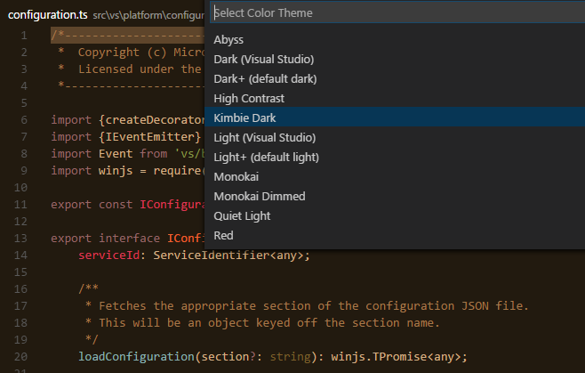
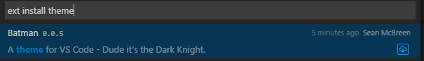
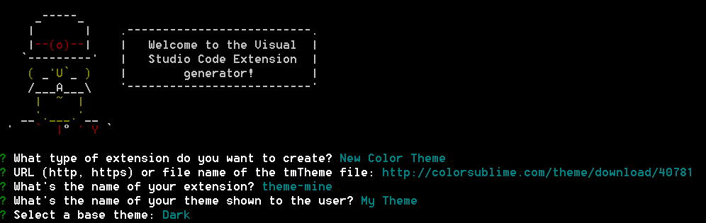
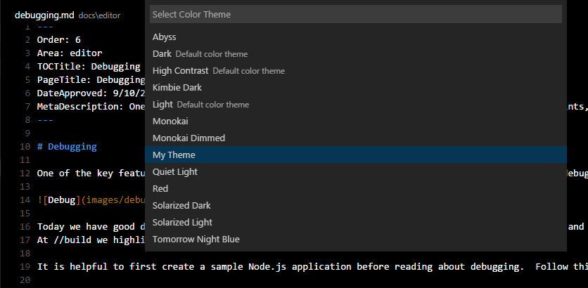

Color Themes - 颜色主题
Color themes let you modify VS Code's background, text and language syntax colorization to suit your preferences and work environment. VS Code supports light, dark and high contrast themes.
颜色主题允许你修改 VS Code 的背景颜色、文本颜色以及语言的语法着色，以此满足你的个人偏好和工作环境。VS Code 支持浅色、深色以及高对比度主题。
Selecting the Color Theme - 选择颜色主题
There are several out-of-the-box color themes in VS Code for you to try.
在 VS Code 中有大量的内置颜色主题供你选择。
- Open the Color Theme picker with File > Preferences > Color Theme.
- Use the cursor keys to preview the colors of the theme.
Select the theme you want and hit
kbstyle(Enter).通过 文件 > 首选项 > 颜色主题 打开颜色主题选择器。
- 使用光标键来预览各种主题的颜色。
- 选中你想要的主题后敲击
kbstyle(回车键).

Adding Themes from the Extension Marketplace - 从扩展市场中添加主题
Many themes have been uploaded to the VS Code Extension Marketplace by the community. If you find one you want to use, simply install it and restart VS Code and the new theme will be available.
通过社区，我们向 VS Code 的 扩展市场 上传了大量的主题。如果在扩展市场中找到了一个心仪的主题，只需要安装该主题并重启 VS Code，之后就可以使用该主题。
Tip: To search for themes, type 'theme' in the
Extension: Install Extensiondropdown to filter on extensions with 'theme' in their name.提示： 为了寻找主题，在命令
Extension: Install Extension中键入 'theme'，其下拉列表中可以筛选出名字带有 theme 的扩展插件。

You can also browse the VS Code Marketplace site directly to find available themes.
你也可以直接浏览 VS Code 市场 网址寻找可用的主题。
Adding a new Theme - 添加新主题
You can also add new TextMate theme files (.tmTheme) to your VS Code installation using the yo code extension generator.
通过使用 yo code 扩展生成器，你也可以向你的 VS Code 添加新的 TextMate 的主题文件 (.tmTheme)
ColorSublime has hundreds of existing TextMate themes to choose from. Pick a theme you like and copy the Download link to use in the Yeoman generator. It will be in a format like "http://colorsublime.com/theme/download/(number)". The 'code' generator will prompt you for the URL or file location of the .tmTheme file, the theme name as well as other information for the theme.
ColorSublime 有数百个可供选择的 TextMate 主题。选择一个你喜欢的主题，然后把它的下载链接复制到 Yeoman 生成器中并使用。下载链接应类似于 "http://colorsublime.com/theme/download/(number)" 这样的形式。之后，“代码”生成器将提示关于该主题文件的 URL 或者文件路径，以及其他关于该主题的信息，比如主题的名称。

Copy the generated theme folder to a new folder under your .vscode/extensions folder and restart VS Code.
将产生的主题文件夹复制到 your .vscode/extensions folder 文件夹下并重启 VS Code。
Open the Color Theme picker theme with File > Preferences > Color Theme and you can see your theme in the dropdown. Arrow up and down to see a live preview of your theme.
使用 文件 > 首选项 > 颜色主题 打开颜色主题选择器，你会发现在下拉列表中看到你新添加的主题。通过上下方向键可以实时预览你的主题。

Publishing a Theme to the Extension Marketplace - 将主题发布到扩展市场中
If you'd like to share your new theme with the community, you can publish it to the Extension Marketplace. Use the vsce publishing tool to package your theme and publish it to the VS Code Marketplace.
如果你希望将你的新主题分享到整个社区，你可以将它发布到 扩展市场 中. 利用 vsce 发布工具 打包你的主题并将它发布到 VS Code 市场中。
Tip: To make it easy for users to find your theme, include the word "theme" in the extension description and set the
CategorytoThemein yourpackage.json.提示： 为了让用户更加简便的寻找主题, 我们在扩展描述中添加 'theme' 的关键字，以及在你的
package.json中将Category设置为Theme。
We also have recommendations on how to make your extension look great on the VS Code Marketplace, see Marketplace Presentation Tips.
关于在VS Code 市场中如何让你的扩展更加出色，我们也有一些建议，详细请看市场介绍要点.
Next Steps - 下一步
Themes are just one way to customize VS Code. If you'd like to learn more about VS Code extensibility, try these topics:
主题仅仅只是定制化 VS Code 的一步，如果你想了解更多的 VS Code 的可扩展性，请了解以下主题：
- Colorizers and Bracket Matchers - Learn how to import TextMate colorizers
- Snippets - Add additional snippets to your favorite language
Extending Visual Studio Code - Learn about other ways to extend VS Code
调色板 - 了解如何导入 TextMate 调色板
- 用户定义代码段 - 向你喜欢的语言添加更多的用户定义代码段
- 扩展 VS Code - 了解扩展 VS Code 的其他方法
Common Questions - 常见问题
Nothing yet
暂无